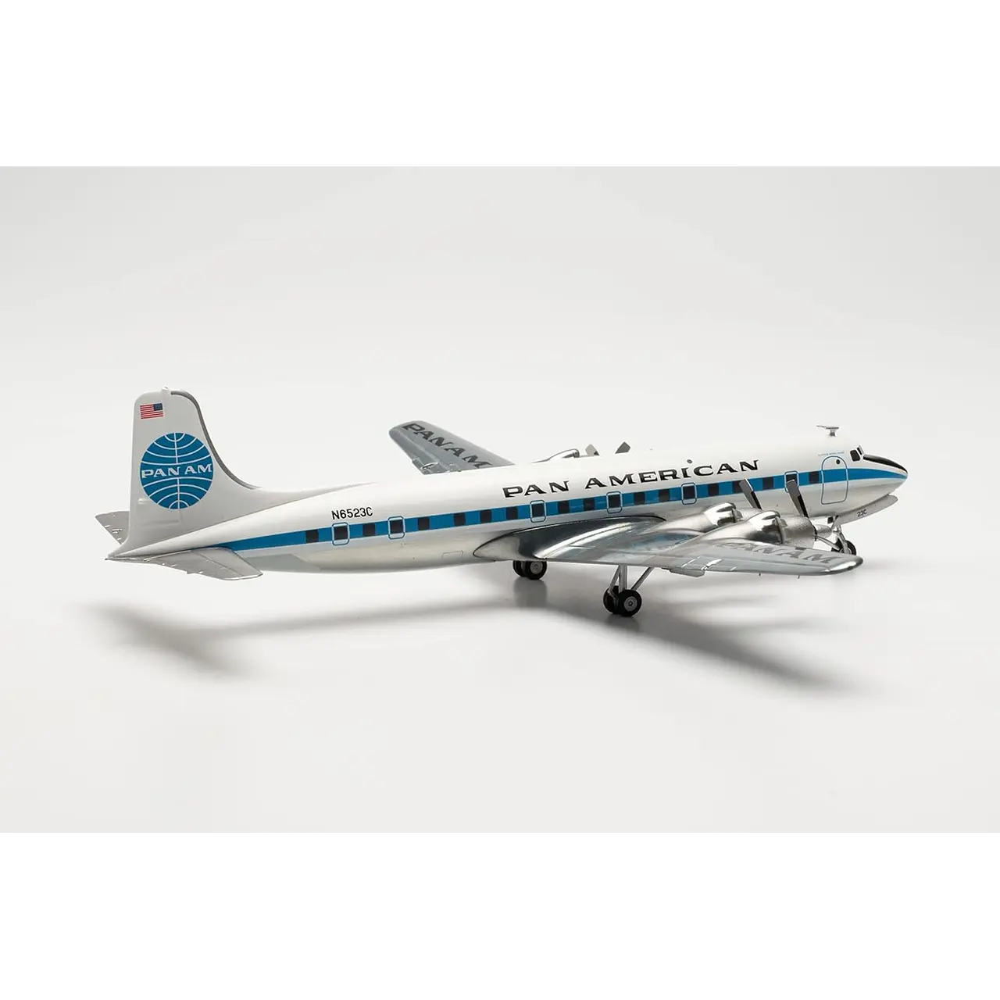
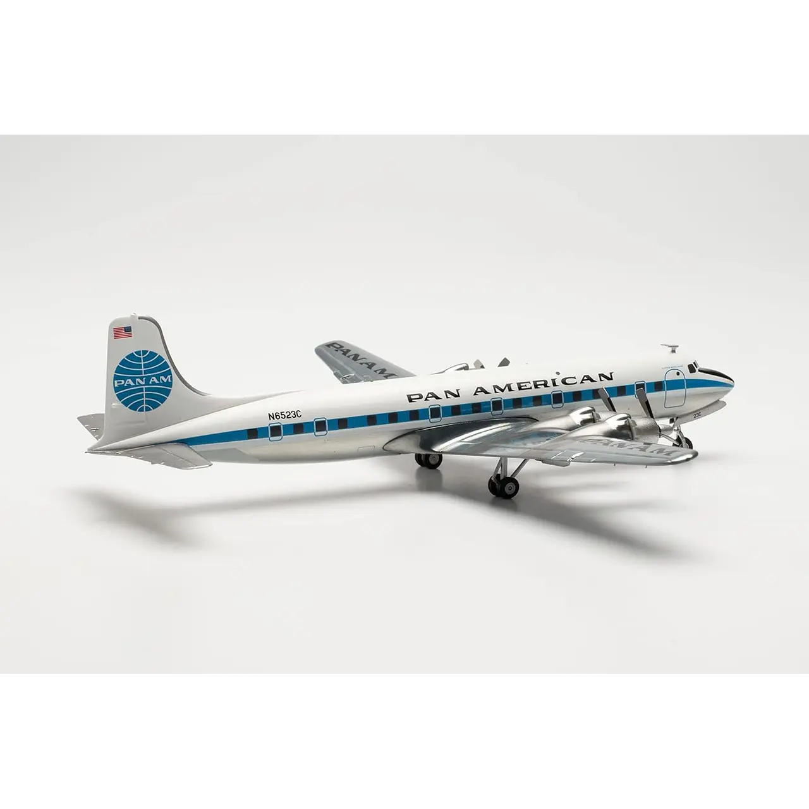

Avión Douglas
Avión Colección Douglas Dc-6B Pan Am 1/200 $389.000 COP
Descripción:
Herpa Avión Colección Douglas Dc-6B
Los doce DC-6 estacionados en el aeropuerto Tempelhof de Berlín Occidental, que conectaba la ciudad
cerrada con Alemania Occidental, no sólo eran una vista común aquí en los años 50 y 60. Desde
principios de los años 50, Pan American World Airways puso en servicio nada menos que 54 Douglas
DC-6, que se podían encontrar en casi todo el mundo. Entregado en 1952, este Clipper se utilizó en
parte en las rutas transatlánticas de Pan Am y más tarde también en el tráfico nacional alemán.
Lleva el nombre de Betsy Ross, de quien se dice que bordó la primera bandera oficial de los Estados
Unidos. En 1968 el avión fue vendido y sustituido por el Boeing 727.